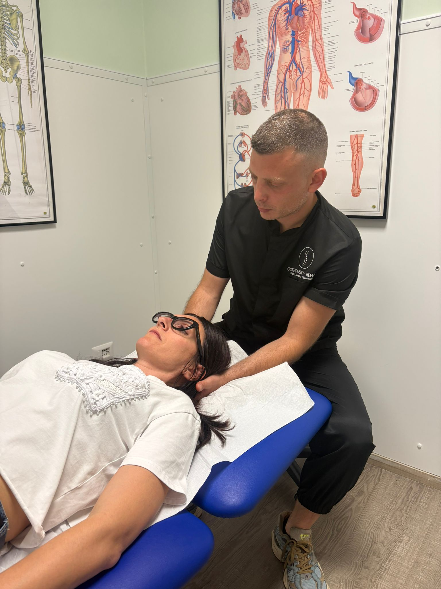
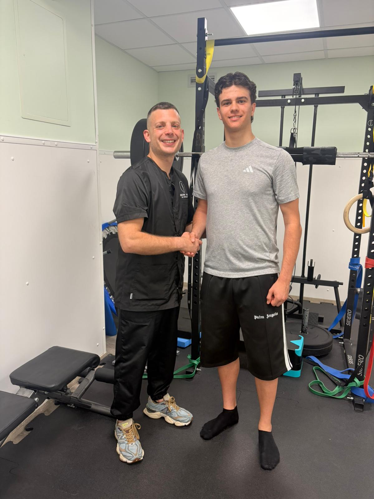
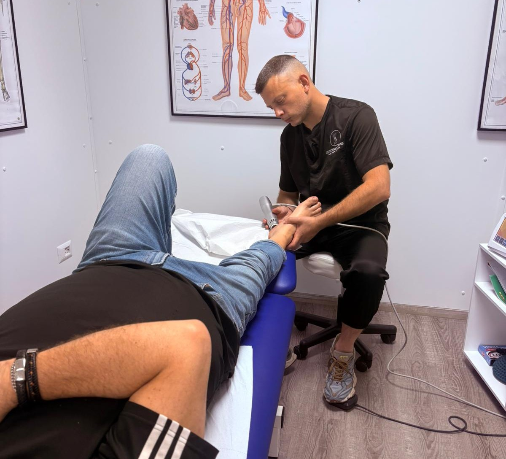
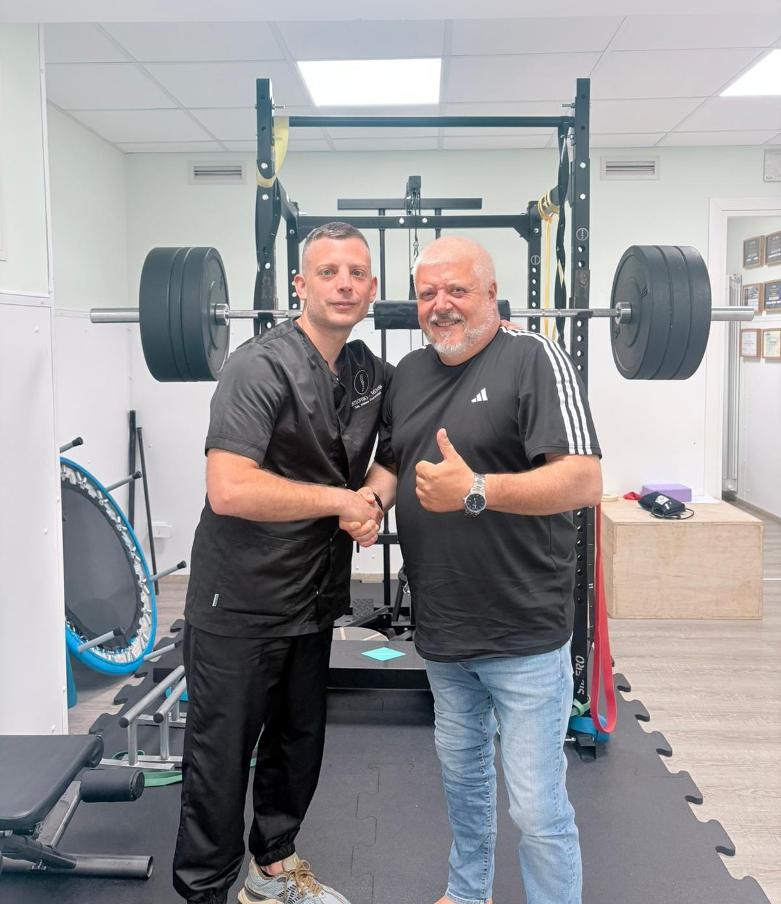
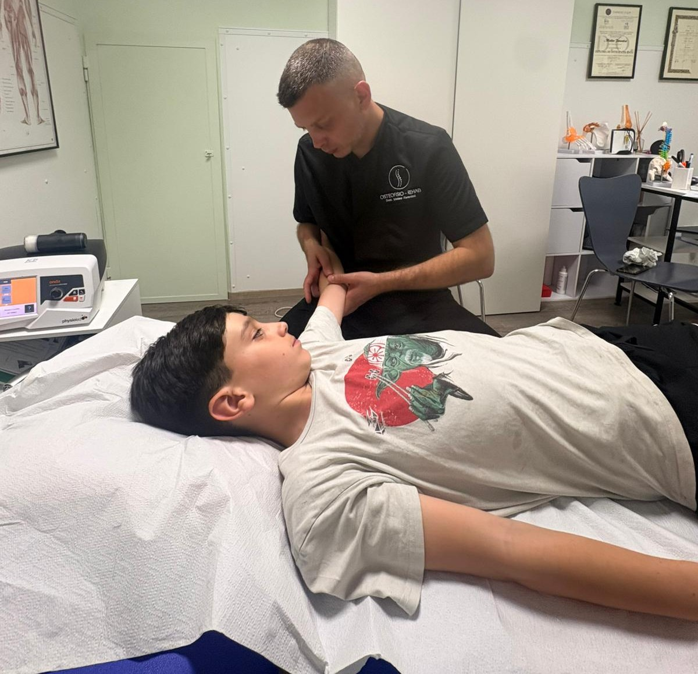

01
Ascolto e valutazione
Partiamo dalla tua storia, dai sintomi e dalle difficoltà quotidiane per comprendere le tue necessità e definire gli obiettivi del percorso.
OsteoFisio - Rehab mette competenza e attenzione al centro di ogni percorso di fisioterapia. Ogni trattamento è pensato sulle esigenze individuali, con l’obiettivo di ridurre il dolore, migliorare il movimento e ritrovare fiducia nelle attività quotidiane.
Sono davvero soddisfatta del percorso fatto con loro e li consiglio vivamente a chiunque.



Sono fisioterapista e osteopata, e con OsteoFisio - Rehab ho dato forma a un progetto che mette al centro la persona, il movimento e il recupero funzionale.
Nel mio lavoro unisco ascolto, valutazione e trattamenti personalizzati, con l'obiettivo di aiutare ogni paziente a ritrovare benessere e fiducia nel movimento.
“ Matteo è un professionista esemplare. Parte dall'ascolto e da check approfonditi prima di intervenire attraverso un approccio olistico. Dopo poco tempo ho ottenuto dei risultati tangibili. Una sicurezza! ”
Il Dott. Matteo Fiorentini unisce valutazione, competenza ed esperienza per individuare il trattamento più adatto alle tue necessità.
Partiamo dalla tua storia, dai sintomi e dalle difficoltà quotidiane per comprendere le tue necessità e definire gli obiettivi del percorso.
Sulla base della valutazione, definiamo un programma calibrato sulla tua condizione fisica, sulle tue esigenze e sugli obiettivi che vuoi raggiungere.
Attraverso il trattamento manuale e l'esercizio terapeutico lavoriamo sulle limitazioni emerse, adattando il percorso ai tuoi progressi.
Lavoriamo per recuperare movimento e autonomia, aiutandoti a tornare gradualmente alle attività quotidiane, lavorative o sportive.
Sono arrivata da Matteo con diverse problematiche che mi portavo da tempo (dolore fisso alla cervicale e rigidità al collo, dolore alla mandibola per bruxismo , mal di testa e mal di pancia frequente). Devo davvero ringraziarlo, ad oggi mi sento molto meglio. Oltre a trattarmi mi ha dato dei consigli pratici ed esercizi mirati per le mie problematiche che sono migliorate notevolmente, alcune completamente sparite. Lo consiglio vivamente, un vero professionista!
Matteo è fantastico e molto professionale. Mi ha risolto il problema in poche sedute. Un plauso speciale anche al suo staff consigliatissimo.
Matteo è un professionista serio e molto preparato. Mi segue ormai da più di due anni ed è per me insostituibile, accompagnandomi nella gestione dei diversi sport che pratico. Il suo approccio all'infortunio/problema è totalmente diverso dagli altri, lavorando anche su aspetti quali fiducia nel lavoro e nel percorso da svolgere insieme.
Sono arrivata da Matteo a seguito di un dolore fortissimo che partiva da collo e terminava sul braccio sinistro, creandomi del Formicolio e una difficoltà in qualsivoglia movimento. Dopo una breve anamnesi a voce mi ha iniziato a manipolare e ho provato sollievo quasi immediato. Il formicolio che raggiungeva la mano è sparito subito. La mia esperienza è stata davvero molto positiva, Matteo è un professionista con il sorriso e una grande empatia. Con le sue manovre riesce a capire anche le emozioni profonde e/o gli alimenti che possono condizionare muscoli e creare contratture. Lo raccomando al 100% soprattutto a chi cerca una figura professionale esperta ma molto alla mano.
Dopo diversi pareri ho avuto la fortuna di essere trattato da Matteo. Arrivavo da situazioni complicate sia causa di una scoliosi sia problemi di natura muscolare. I trattamenti sono di qualità e l’individuazione del problema è sempre ben precisa. Matteo è una di quelle persone che riesce a garantirti un percorso che in maniera veloce porta risultati e riporta l’atleta alla performance sportiva.
Sono andato da Matteo circa 5 anni fa per la riabilitazione dopo l’operazione al legamento crociato anteriore del ginocchio, su consiglio di un amico di famiglia. Fin dai primi incontri mi sono sentito in ottime mani: professionale, attento e sempre chiaro nelle spiegazioni. Grazie al suo lavoro ho recuperato perfettamente, permettendomi di praticare nuovamente attività sportiva ad alta intensità. Da allora continuo ad andare da lui all’evenienza. Il fatto che ci torni regolarmente dice tutto: mi fido ciecamente e lo consiglio senza esitazione a chiunque abbia bisogno di un fisioterapista competente e serio. Grazie Matteo!


So quanto il dolore o un infortunio possano limitare la tua vita e le tue passioni. Per questo, la prima visita è dedicata all'ascolto e alla comprensione del problema, così da costruire un percorso riabilitativo su misura.
Niente schemi preimpostati o macchinari utilizzati senza uno scopo preciso: ogni fase del trattamento ha un obiettivo chiaro. Ti spiegherò cosa faremo e perché, fornendoti gli strumenti per recuperare la libertà di movimento nel tempo.
Scopri le principali patologie trattate dal Dott. Fiorentini e i percorsi dedicati per ritrovare il tuo benessere e la libertà di movimento.
Approfondimenti, consigli pratici e aggiornamenti per prenderti cura del tuo corpo, migliorare il movimento e conoscere meglio la fisioterapia e l’osteopatia.
Scopri cos'è la scoliosi, quali sono i sintomi, come viene diagnosticata e quale ruolo può avere la fisioterapia nella gestione e nel controllo della curva.
Leggi l'articoloDolore all'inguine durante lo sport? Scopri cos'è la pubalgia, quali sono le cause, i tempi di recupero e come la fisioterapia può aiutarti.
Leggi l'articoloHai preso una distorsione alla caviglia? Scopri cosa fare, quanto dura il recupero e come la fisioterapia può aiutarti a ritrovare stabilità e movimento.
Leggi l'articoloHai un dolore, fai fatica a muoverti come vorresti o vuoi recuperare dopo un infortunio? Scrivimi su WhatsApp o chiamami direttamente.